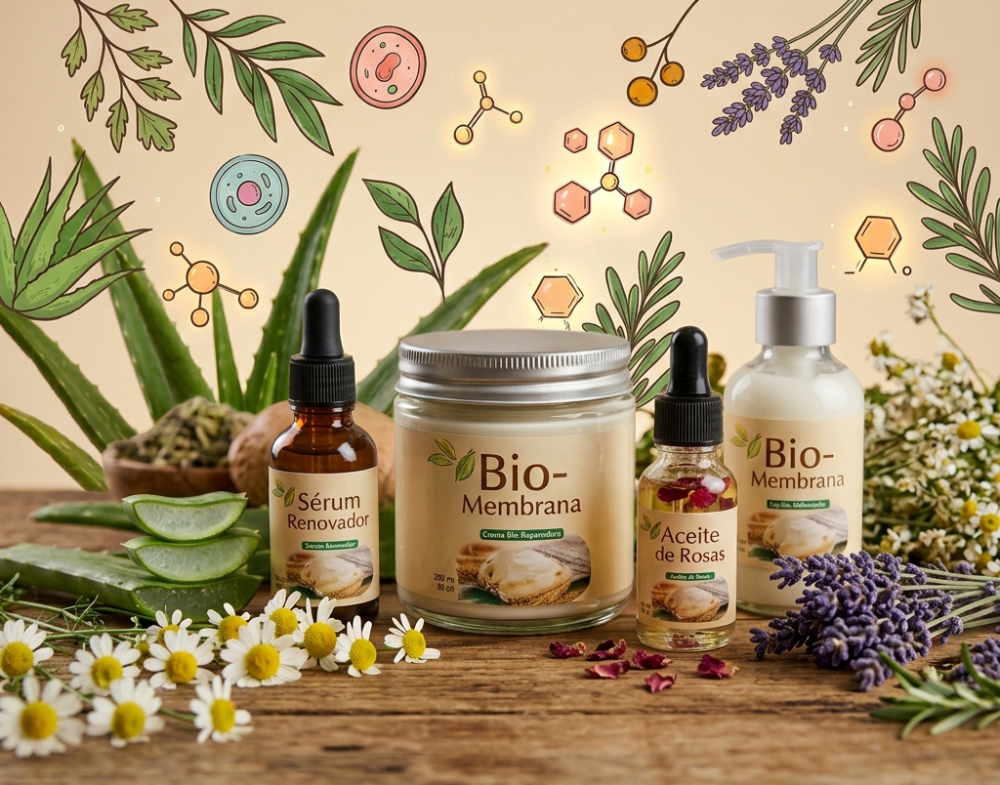
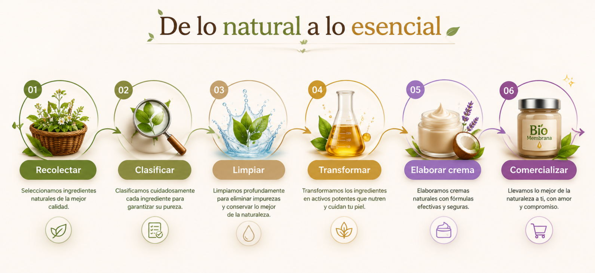

Nuestra misión
Crear cosmética con ingredientes seleccionados y revalorizar recursos orgánicos mediante procesos cuidadosos, para ofrecer una alternativa de cuidado más consciente.
De lo natural a lo esencial
Rescatamos ingredientes, valoramos nuestro entorno y creamos cosmética artesanal en Cañete.
Conoce nuestra historiaNuestra historia
BIO-Membrana nace en la provincia de Cañete con el propósito de explorar una forma más circular de hacer cosmética. Vimos que las cáscaras de huevo de mercados y restaurantes locales podían convertirse en una oportunidad para aprovechar mejor los recursos.
Recuperamos cuidadosamente la membrana interna del huevo y la combinamos con ingredientes como vitamina E, aceite de coco, sábila y miel para crear productos de cuidado personal elaborados artesanalmente.
Así, cada fórmula une el saber hacer local con el deseo de cuidar la piel y reducir residuos orgánicos.

Lo que nos mueve
Crear cosmética con ingredientes seleccionados y revalorizar recursos orgánicos mediante procesos cuidadosos, para ofrecer una alternativa de cuidado más consciente.
Ser una marca reconocida por su propuesta cosmética innovadora y ecológica, y promover la economía circular en Cañete y nuevos mercados.
De lo natural a lo esencial
Seleccionamos cada componente por su lugar en nuestras fórmulas y en nuestro proceso.
Un recurso recuperado y revalorizado como parte de nuestra propuesta de economía circular.
Un ingrediente presente en nuestras fórmulas para acompañar el cuidado diario de la piel.
Un aceite de origen vegetal que aporta una textura rica y emoliente a nuestras cremas.
Ingredientes tradicionales que forman parte de nuestra inspiración botánica.
Del origen al ritual
Nuestro proceso reúne la selección y clasificación de ingredientes, su preparación cuidadosa y la elaboración artesanal de las fórmulas.
Cada paso busca aprovechar mejor los recursos y mantener el cuidado que ponemos en nuestros productos.

Nuestro compromiso
Trabajamos para recuperar recursos, impulsar la economía circular en Cañete y crear una experiencia de cuidado respetuosa con el entorno.
Descubre nuestros productos